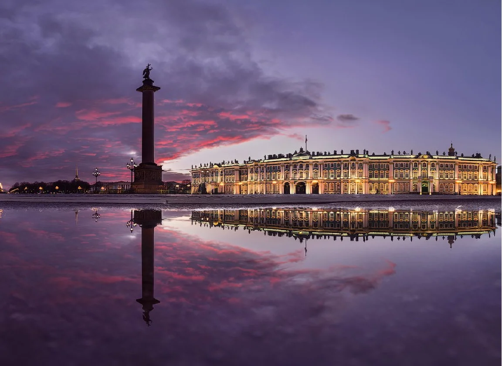

Белоусов Миша
Студент
Родился 27 мая 2003 года в Новосибирске. В 2021 году я
окончил школу, сдал ЕГЭ и поступил в НГУЭУ. В данный момент
я увлекаюсь музыкой и рисованием.
Мои любимые жанры музыки:
После сдачи экзаменов я планировал учиться в Санкт-Петербурге,
из-за того, что первая поездка в данный город произвела на меня большое
впечатление.
Санкт-Петербург расположен на Северо-Западе России, в восточной
части Финского залива.После Москвы Санкт-Петербург — второй
по величине город в России и самый северный мегаполис в мире.
Город простирается на 40 островах в дельте реки Невы.
Позже я передумал учиться в Санкт-петербурге, но этот город мне
нравится до сих пор.
Фильмы, которые понравились мне больше всего:
Текущее обучение в университете меня устраивает, надеюсь,
что дальше будет больше интересных предметов.
В дальнейшем я хочу связать свою жизнь с творчеством.
Мне нравится создавать что-нибудь новое и делать смешные штуки.